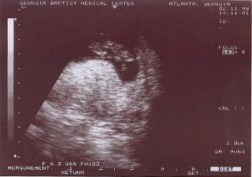
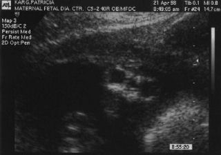
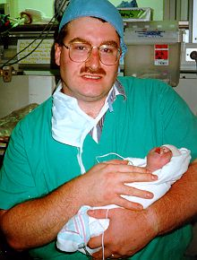
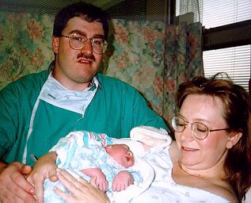
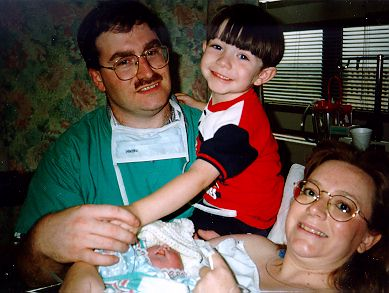

Locate a Pregnancy Center near you.
En cariñosa memoria de
Mary Elizabeth Karg
Septiembre
3, 1998 - Septiembre 4, 1998
Estábamos felices al enterarnos que Patricia estaba embarazada de nuevo - habíamos tenido una pérdida en un embarazo anterior. Por entonces, estábamos criando a Joshua, un niño de dos años de fuerte voluntad. Dado que había habido inconvenientes en el parto de Joshua por una toxemia, y también en razón de la pérdida, Patricia estaba bajo estricto control médico. Pronto nos pusimos de acuerdo sobre los nombre del bebé: Christopher Thomas o Mary Elizabeth.
Esperábamos al bebé para el 9 de septiembre de 1998. Alrededor de la semana 18, la médica realizó un AFP, que dio un resultado anormal. Nos explicó que había dos razones para esto: la fecha podría haberse calculado mal, o el bebé padecer un defecto del tubo neural. Nos mandó a hacer un ultrasonido, para verificar la fecha.
El ultrasonido tuvo lugar el 15 de abril de 1998. Fui con Patricia y Joshua, aguardando esos vistazos tempranos de nuestro bebé. Patricia quería conocer el sexo, yo no. Igualmente, no esperábamos que la médica nos informara que el bebé padecía anencefalia. Fue un shock.
Preguntamos a la médica qué hacer. Nos respondió que la mayoría de la gente interrumpe el embarazo, por considerar al bebé inviable. Pero nosotros sabíamos que allí dentro había una vida, y que le debíamos dar cada chance de vivir. Lo discutimos con la médica, accedió, y dispuso un nuevo ultrasonido.
Antes de efectuarlo, empezamos a investigar sobre la anencefalia y los defectos del tubo neural, rezando que el primer ultrasonido estuviera equivocado. Internet sirvió como útil herramienta de investigación. Para el momento del segundo ultrasonido, ya estábamos en tema. Pero no reveló nada nuevo. El cerebro del debé no estaba formado. Aún orábamos por un milagro. Supimos que era una niña. Ahora, podíamos rezar por nuestra Mary Elizabeth.
Tras el segundo ultrasonido, la doctora nos informó nuestras opciones, y le dijimos que llevaríamos el embarazo adelante. Ella nos hizo saber que trataría el embarazo como uno normal, y nos daría el mismo cuidado, para que no nos sintiéramos diferentes.
Pasamos varias noches y fines de semana estudiando sobre la anencefalia, y hallamos grupos de apoyo y contención. Patricia también encontró, por Internet, personas que habían tenido un hijo anencefálico, y comenzó a corresponder con ellas. El sitio con información más útil fue Anencephaly Support Foundation, que contiene información, historias personales, y artículos médicos acerca de los defectos del tubo neural y la anencefalia. También nos ayudó a prepararnos para el día del nacimiento de Mary Elizabeth.
Preparamos una valija con nuestra cámara, rollos, la filmadora, ropitas de bebé, una muñeca, un librito infantil y una Biblia. Patricia empacó otra maleta para ella. Dos veces antes del parto, Patricia empezó a sentirse mal, y por precaución la médica nos envió a la sala de emergencias en observación. Nos familiarizamos con el hospital. Tres semanas antes del término, tras la segunda visita a Emergencias, Patricia debió quedar en reposo. Su madre vino de la vecina Alabama para ayudar en la casa.
En el siguiente control, en consultorio, dos semanas antes del término, cuando el bebé fue monitoreado, se descubrió que estaba en presentación pelviana. Una cesárea fue prevista para la semana siguiente. Dos días antes de ésta, un nuevo monitoreo no mostró cambios. El jueves 3 de septiembre, por la mañana, nos presentamos en el hospital para la cesárea.
Mary Elizabeth nació a las 9:49 a.m., y luchó para respirar. Acostada en un ambiente tibio, con los médicos sobre ella, lanzó un grito y tomó su primera bocanada de aire. El neonatólogo no creía que fuera a sobrevivir por mucho tiempo, así que la alcé y se la entregué a Patricia. Aún estaban terminando de operarla, pero tomó a la niña contra su cara. G. K. Abner, pastor de la iglesia de la madre de Patricia, nos dio una bendición conjunta, y sólo entonces llevamos a Mary Elizabeth a la nursery especial. Tomamos algunas fotos, mientras empezaban a asearla, y la enfermera me dijo que podría regresar en media hora, cuando terminasen.
Regresé a la sala de espera, y hallé a Joshua, a la familia de Patricia, a G. K. Abner, y Fray Gordy. Le hablé a Joshua de su hermanita, y comenzó a llorar. Le mostré una foto Polaroid de ella, y le expliqué que su cabecita estaba quebrada. Fue muy difícil. Volví entonces con Patricia, todavía en el quirófano. Le conté cómo estaban las cosas, y la ayudé a pasar a la sala de recuperación. Llamé a mi mamá y a mi papá y los puse al tanto.
Mientras estábamos en Recuperación, la enfermera especializada nos trajo a Mary Elizabeth. Llevaba una hermosa batita azul, y tenía una venda en su cabecita. Patricia la tomó en brazos, y Fray Gordy la bautizó en una emotiva ceremonia. Tomamos una fotografía familiar. Llevamos nuestras cosas a la habitación, y regresé a la nursery especial, donde permanecí con la bebita casi todo el día. Apenas pudo dejar Recuperación, Patricia se unió a mí.
Mary Elizabeth era normal, salvo por la cima de su cabecita. ¡Hasta tenía cabello! Era muy activa, y tomó nuestros dedos de inmediato. Le gustaba estar en brazos, y abría uno de sus ojitos. Se sobresaltaba con los ruidos fuertes, y a menudo movía la boquita pidiendo el pecho. La enfermera le colocó un tubo, por el que se la alimentaba a intervalos. Firmamos una orden de no resucitar, pero requerimos que fuera mantenida confortable y sin hambre.
Durante el día, Joshua vino a visitarla, y le cantó una canción: "Shhh, bebecito, no digas nada. Mamá va a comprarte un ruiseñor". Joshua le agregó: "Si ese anillo de diamantes no brillara, ¡Mamá te compraría un trencito!". La había traído una muñeca, y la puso en su cuna. Allí quedó.
Tuve que irme a las 18:30, por el cambio de turnos, y la dejé en la cunita. La enfermera me recomendó acostarla boca abajo. Así lo hice, y la respiración se le hizo muy fuerte. Me alarmé al principio, pero comprendí que sólo me estaba buscando.
Hicimos un alto para dormir esa noche, pero nos llamaron de regreso a la una de la mañana, cuando los signos vitales comenzaron a caer. Apenas la alzamos, el cuadro mejoró. Nos quedamos varias horas, y luego fuimos a descansar un rato. Volví antes de las 6:30, hora del cambio de turno, y tomé mi desayuno. Patricia y yo pasamos la mañana con la bebita, pero notamos que ya no respondía como al primer día. Sobre las 13:00, sus signos vitales empezaron a oscilar, y la llevamos a una habitación individual, cerca de la nursery.
Pasamos las seis horas siguientes observando su combate por la vida. A veces dejaba de respirar, pero cobraba fuerzas y volvía a tomar aire de nuevo. Lo hizo unas cinco veces, cada una más débil que la anterior. Sobre las 19:30, dejó de respirar, y murió en brazos de Patricia. En todo momento, el capellán del hospital, un cura local, y un diácono de nuestra parroquia estuvieron a nuestro lado.
El diácono Jack se quedó con nosotros después del fallecimiento. La bañamos y la vestimos, mientras esperábamos a los de la funeraria. La despedimos sobre las 22.00, y regresamos a la pieza. Al día siguiente, arreglamos el funeral, y avisamos a otros amigos y parientes no convocados la noche anterior. Patricia fue dada de alta el sábado, y volvimos a casa. Mis padres habían viajado toda la noche, y ya estaban en casa. Entristecidos, oyeron las novedades.
El sábado a la mañana, toqué la guitarra y dirigí el canto en la misa de las ocho. Fue muy difícil, pero de algún modo me las arreglé. Nuestros amigos nos compraron comida. Los demás servicios se celebraron por la tarde. El diácono Jack condujo la liturgia. A la mañana siguiente, asistimos a la misa fúnebre en San Pío X, y al otro día la enterramos en Alabama. Joshua halló un par de piedras durante el servicio en el cementerio, y las puso en el ataúd de su hermanita. Nosotros habíamos colocado un rosario que nos regaló mi madre, una pequeña Biblia blanca, un prendedor con un ángel guardián, que Patricia había usado durante el embarazo, un osito ángel de la tía Denise, un ángel de porcelana de Marie, la tía de Patricia, y una foto de la familia.
Le dimos la muñeca de Mary Elizabeth a Joshua, y la llamó Mary Elizabeth. Eso le hizo mucho bien.
Steve ha hecho un gran trabajo contando los recuerdos de nuestra experiencia con nuestra hermosa Mary Elizabeth. Yo quisiera ahora compartir con ustedes algunos de mis pensamientos y sentimientos.
Siento como una bendición el haber sido la madre de Mary Elizabeth. Siempre supe que mi bebita me necesitaba para protegerla y para ser su voz, desde el momento en que fuera concebida. Estoy muy agradecida de haber podido tenerla en mis brazos, y contemplar su hermosa carita. Las 34 horas que compartimos con ella quedarán para siempre en mi mente como un tiempo muy especial, con una pequeña muy especial. Sé que mi hija ahora está a salvo en el cielo. La extraño terriblemente, y todo lo daría para tenerla ahora aquí conmigo. Tengo consuelo en saber que un día volveré a tomarla entre mis manos en el cielo. Mary Elizabeth me enseñó mucho acerca del amor, siendo humilde y agradecida en todo y por todo.
¡Actualización!
Patricia comenzó a tomar ácido fólico después del nacimiento de Mary Elizabeth, y quedó embarazada en la primavera de 1999. Dio a luz una niña, Anna Rose Karg, el 23 de diciembre de ese año. Anna es saludable y está bien, y no tuvo más defectos que un soplo cardíaco suave, que se cerró espontáneamente a los dos meses de vida.
This page was lovingly translated from English by Ricardo D. Rabinovich-Berkman. We thank him from our hearts, and remember his son Ricky. Un abrazo grande!
Page created by The Karg Family.